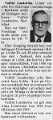
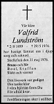

Valfrid Lundström
Möbelsnickare i Jörn 1925. Blev 76 år.
| Född: | 1899-08-02 Frostkåge 10. Byske fs, Byske sn. [1] |
|---|
| Död: | 1976-05-29 Nygatan 62 B, Skellefteå, Sankt Olovs fs, Skellefteå kn. [2] |
|---|
| Vigsel: | 1924-10-05 Jörns station, Jörns fs, Jörns sn. [3] | Snickaren Valfrid Lundström och Hemmadotterna Alma Karolina Andersson, båda Jörns station. Bådas muntliga samtycke. Försäkran från båda. |
|---|
Personhistoria
| Årtal | Ålder | Händelse |
|---|
| 1899 |
|
Födelse 1899-08-02 Frostkåge 10. Byske fs, Byske sn [1] |
| 1919 |
20 år |
Fadern Johan Jakobsson Lundström dör 1919-11-18 Frostkåge, Byske fs, Byske sn |
| 1924 |
24 år |
Modern Emma Carolina Jakobsdotter dör 1924-04-29 Frostkåge, Byske fs, Byske sn |
| 1924 |
25 år |
Vigsel Alma Karolina Andersson 1924-10-05 Jörns station, Jörns fs, Jörns sn [3] |
| 1925 |
25 år |
Sonen Tord Bruno Lundström föds 1925-07-16 Jörn, Jörns fs, Jörns sn [4] |
| 1965 |
65 år |
Makan Alma Karolina Andersson dör 1965-01-29 Nygatan 62 B, Skellefteå, Sankt Olovs fs, Skellefteå kn [5] |
| 1976 |
76 år |
Död 1976-05-29 Nygatan 62 B, Skellefteå, Sankt Olovs fs, Skellefteå kn [2] |
Källor
| [1] | Byske (AC) AIIa:3 (1898-1904) Bild 3060 / sid 1101 |
| |
| | |
| [2] | Mtl 71 / RTB 76 |
| |
| | |
| [3] | Jörn (AC) EI:4 (1913-1941) 28/1924 Bild 770 / sid 72, AIIa:6 (1918-1926) Bild 2000 / sid 188 |
| |
| | |
| [4] | Jörn (AC) C:6 (1917-1930) 110/1925 Bild 2380 / sid 232, AIIa:6 (1918-1926) Bild 2000 / sid 188 |
| |
| | |
| [5] | DB / DOR 65 / UTD 61-67 |
| |
|
|  |
1976-05-31. Valfrid Lundström
Norra Västerbotten
|
| |
|  |
1975-02-02. Valfrid Lundström
Norra Västerbotten
|
|
{kind=link}
{kind=link}